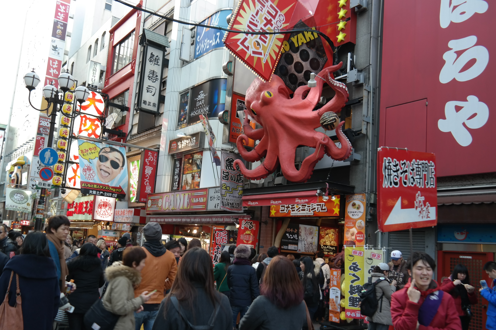

- 먹을거리
- 관광지
- 주변도시
타코야키

타코야키하면 오사카, 보들보들한 속과 쫄깃한 문어 식감이 잘 어우러져 자꾸 생각나게 된다.
크기가 조금 커 이쑤시개 하나로는 먹기 불편하니 넉넉히
챙기자.
오코노미야끼
오사카에서 탄생한 음식으로, 다양한 재료를 반죽해 철판에 구운 일본식 부침개라할 수 있다. 취향대로 '오코노미'와 구이 '야키'가 합쳐진 말로 원하는 재료를 골라 넣어먹을 수 있는 가게도 있다. 대부분의 가게에선 직원들이 구워주는 경우가 많으니 걱정 말고 가보자.
쿠시카츠

바삭한 꼬치 튀김을 톡 쏘는 소스에 찍어 먹으면 시원한 맥주 생각이 절로 난다. 단 소스는 한 번만 찍는게 국룰이므로 기억하고 가자.
고베규

일본, 그것도 칸사이 지방에 왔다면 꼭 먹어봐야 할 메뉴. 일본의 와규가 유명하는 것은 누구나 잘 아는 사실이지만, 그중에서도 고베 지역의 소인 고베규는 차원이 다르다. 마블링이 일품이라 불에 살짝만 구워도 그 풍미가 뛰어나다.
오사카 성

⟨ ⟩
일본 3대 성 중 하나
오사카 관광명소로 손꼽히는 대표적인 곳 오사카성입니다. 봄에는 벚꽃이 만개하여 벚꽃놀이 가기 좋은 여행지고, 여름에는 푸른 녹음이 지천에 깔리고 가을에는 알록달록 단풍이, 겨울에는 하얀 눈으로 뒤덮히는 어느 계절에 가도 아름다운 곳입니다. 일본 건축양식을 잘 보여주는 성으로 높은 곳에서 바라보는 천수각이 아름다운 곳입니다. 주변에는 인공호수를 비롯해 산책하기도 좋습니다.
도톤보리, 신사이바시

- 
⟨ ⟩
쇼핑과 먹거리 천국
오사카에서도 맛집이 많은 도톤보리. 부지런히 소화를 시켜야 계속 먹을 수 있다. 유쾌한 간판도 많아 포토존으로도 충분.
신사이바시에는 문구, 의류, 액세서리, 캐릭터, 서점등 없는게 없으니 '텅장 주의보'.
유니버설 스튜디오 재팬
오사카를 대표하는 테마파크
유명 헐리우드 영화를 테마로 한 공원에서 인생샷도 건지고, 흥미진진한 어트렉션도 놓치지 말자. 최고 인기는 역시 '스파이더맨 라이드'와 '해리포터 라이드'. 최근에는 슈퍼마리오를 배경으로한 슈퍼 닌텐도 월드도 개장해 화재가 되었다.
우메다 스카이 빌딩, 헵파이브

⟨ ⟩
도심 속 공중정원
지상 40층으로 파리 개선문과 비슷한 모양이다. 최고층의 공중 정원 전망대는 사방이 유리라 멀리는 오사카만 까지 보인다.
또한 우메다에는 대관람차와 대형 오브제 고래로 유명한 헵파이브가 있다. 디즈니 스토어, 짱구, 원피스 등 캐릭터 전문 매장이 모여있고, 또한 20대를
타깃으로
한 중저가 브랜드 상점도 많이 있다.
교토


⟨ ⟩
과거와 현재가 공존하는 교토
마치 영화와 같은 일본의 옛 모습이 중첩되는 교토. 1,100년 간 수도 역할을 했던 오랜 역사를 증명하는 듯 수많은 유적들을 품고있는 교토는 도시 전체가 문화유산이라 해도 과하지 않다.
나라
귀여운 사슴들이 돌아다니는 나라.
오사카와 교토 근교에 위치하고 있어 잠깐 반나절 정도들리기 좋은 관광지이다. 나라를 방문하면 꼭 가야 하는 곳이 나라 공원이다. 이곳에선 야생 사슴들이 자유롭게 살아가고 있다. 공원에서 초록의 자연과 함께 사슴에게 먹이를 주던가 함께 운치있는 산책을 즐길 수 있다.
고베
낭만적인 항구도시 고베
파도가 잔잔하고 태평양으로 진출하기에 좋은 조건을 갖춘 고베는 예로부터 중국과의 교류 창구 역할을 했다. 메이지 유신 때의 문화가 그대로 남아 풍경이 이국적이다.